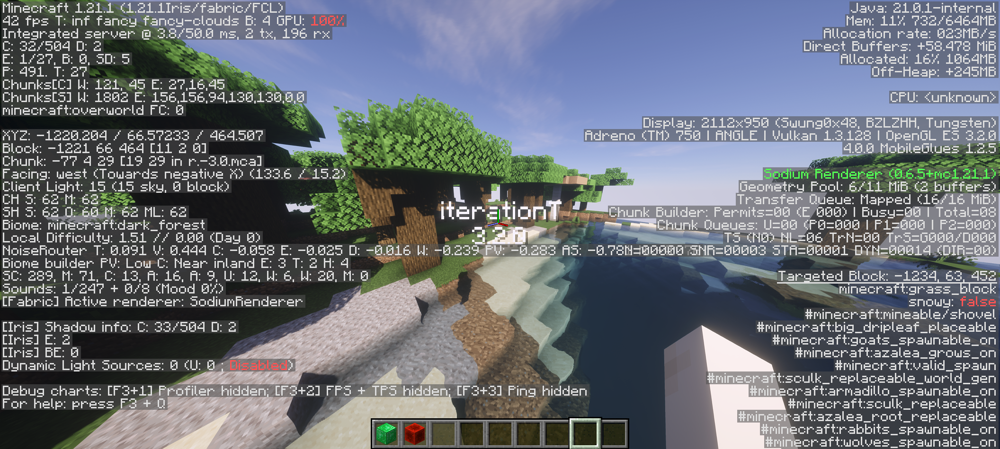

MobileGlues 值不值得花时间折腾？一笔 Android 玩 Minecraft 光影的决策账
MobileGlues 本身开源免费，但为了在手机上玩 Minecraft Java 光影，你到底省下了多少钱、值不值得为它付出配置排错的时间成本？三类用户分账算清楚。
它到底值不值得掏钱？或者说，值不值得花时间折腾？这是每一个在 Android 上想玩 Minecraft 光影的玩家，在第一次点开 MobileGlues官网时心里都会冒出的问题。MobileGlues 本身是一个完全开源、零门槛免费使用的渲染兼容层，采用 GNU LGPL-2.1 许可证——但"免费"并不等于"零成本"。配置排错的时间、驱动兼容性的焦虑、光影逐个测试的耐心，这些隐性成本加起来，到底是省了钱还是多花了冤枉？
定价拆解：它给了什么，没给什么
先把账算清楚。MobileGlues 的核心卖点是把 Minecraft Java 生态里所有现成的桌面 GLSL 着色器自动转换成 Android OpenGL ES 能理解的 GLSL ES 语法。在它之前，手机上想玩光影包只有两条路：要么用基岩版（光影选择极少且效果粗糙），要么手动改写每一个光影包的着色器代码——后者工作量大到基本上没有人真的做完过。
MobileGlues 做的自动转换是全透明的：移除桌面版独有的 layout(binding) 语法块、把 #version 430 core 这类指令转换成 ES 兼容版本、注入精度声明、把函数名和内置变量替换成 ES 等价形式。整个过程对光影包作者和玩家都是看不见的，装上就能跑现成的 BSL、Chocapic13、iterationT 这些耳熟能详的光影包。

它没给的东西同样重要：不能解决语法之外的问题。如果一个光影包用了桌面 OpenGL 特有的帧缓冲格式或渲染管线特性，MobileGlues 改不了——编译可能过了，但渲染出来有图形 glitch 或者直接黑屏。这些是硬件层面的差异，不是一个转换层能抹平的。
V2.0.0 作为当前稳定版，核心库做了小幅性能优化和内存使用改进，插件 UI 完全重做成了三个清晰的标签页（Home 版本信息/快捷开关、Settings 渲染参数、Info 开源声明），还新增了从启动器借 ANGLE 库的能力（支持 Fold Craft Launcher 和 Zalith Launcher 2）。但这些都是免费功能，没有付费解锁的高级档位。
算账：三类用户分别算
好，现在来算账。虽然 MobileGlues 本身不收费，但"值不值"取决于你不用它要花多少钱才能达到同样的效果。
轻度用户：偶尔开个光影玩玩的休闲党
这类人用手机上 Minecraft 主要是图方便，光影偶尔开一下想看看效果，但不会花太多时间折腾模组组合。
不用 MobileGlues 的成本：两条路。要么玩基岩版光影——选择非常有限，效果和 Java 版差了至少一个档次，没有 BSL 的体积光、没有 Chocapic13 的写实水面，省是省了，但效果完全不是一回事。要么买一台 PC 或游戏主机专门玩——这成本差了几千倍，完全不在一个量级。
用 MobileGlues 的成本：第一次配置大概 15 分钟——从官方下载拿到插件安装包、授予 MANAGE_EXTERNAL_STORAGE 权限、在启动器里开启、挑一个官方兼容列表里标记为 ✅ 的光影包。之后每次启动器里开关一下就行。偶尔遇到黑屏，干净启动测试一下，10 分钟内能定位是光影问题还是模组冲突。

结论：免费版完全够，省下了至少一台 PC 的钱。唯一的代价是那 15 分钟的初始配置。如果这都嫌麻烦，那说明你对光影效果其实没什么追求——直接玩基岩版就行。
主力用户：每天玩几小时、要折腾多模组组合的常客
这类人每天在手机上耗 2~4 小时玩 Minecraft，装了五六个模组（Sodium 优化、JourneyMap 地图、Embeddium 渲染后端），光影一开就是一整天。
不用 MobileGlues 的成本：继续说基岩版——模组生态差了一大截，没有 Sodium 这种级别的性能优化，没有 JourneyMap 这种实时地图，更别提光影了。你花在找基岩版等价模组、适应完全不同的操作逻辑上的时间，可能比直接花 1000 块买个二手游戏手机（专门装个 PC 玩 Minecraft）还贵。
用 MobileGlues 的成本：配置排错成本显著上升。多模组组合 + 光影 = 潜在的黑屏触发点成倍增加。OptiFine 和 Sodium 不能共存这个老生常谈你必须记住，Mali GPU 上 Create 的 flywheel instancing 后端有已知问题要开 ANGLE 绕过，JourneyMap 和 Xaero's World Map 在旧版本 MobileGlues 上会渲染丢失要升级到 V2.0.0。这些坑每个踩一次大概要花 30 分钟到 1 小时排查。
但换个角度想：一个 3000 块的游戏手机能撑多久？2~3 年。如果 MobileGlues 帮你省了这笔钱，你每年能多跑几千小时的 Minecraft。折算下来，每小时省下的钱可能不到一块钱，但那 3000 块的本金可以拿去干别的。
结论：免费版够用，但 ANGLE 驱动开关必须学会用。花 1~2 小时把 MobileGlues文档 里的排错指南从头到尾看一遍，之后遇到问题基本能 5 分钟内定位。省下的钱足够值回那点时间。
重度用户：光影开发者或模组玩家
这类人可能自己在写光影包，或者在测试各种光影 + 模组组合找最佳搭配。
不用 MobileGlues 的成本：如果没有着色器自动转换层，你必须手动把每一个桌面 GLSL 着色器文件改写成 GLSL ES——把 layout(binding) 删掉、把 version 指令改掉、加上精度声明、把函数名逐个替换。一个中型光影包可能有几十上百个着色器文件，每个改 5 分钟，加起来至少半天。而且光影作者每次更新版本你都要再改一遍。
用 MobileGlues 的成本：平台宏支持（V1.2.6 起注入 MG_MOBILEGLUES 和 MG_MOBILEGLUES_VERSION）让你可以直接在着色器里写条件编译——针对 MobileGlues 写一套逻辑，桌面端保持原样。这个能力本身就是为开发者设计的，完全免费。
结论：如果你的工作流里有光影开发这一环，MobileGlues 的自动转换层帮你省掉的工作量，折算成开发时薪可能已经远超买个付费开发工具的钱。它对重度用户来说几乎是刚需。
替代方案：不付这笔"时间账"还有什么路
如果你看完上面的账觉得 MobileGlues 太折腾，还有几条替代路线值得掂量：
云游戏/远程桌面：通过云电脑在手机上跑 Minecraft 桌面版。优点是完全不用关心兼容性，直接玩原生版。缺点是延迟——哪怕 50ms 的延迟，玩 Minecraft 这种需要精准操作的游戏也会非常痛苦。而且云游戏订阅是持续付费，每月 15~30 块不等，长期下来成本不低。
直接买一台 PC 或游戏主机：这是最"彻底"的方案。3000 块左右能配一台能流畅跑 Minecraft + 光影的入门主机，完全不用折腾兼容层，所有模组和光影原生支持。缺点是便携性差——你只能在固定位置玩。
继续用基岩版：如果光影效果对你来说不是刚需，基岩版完全够用。模组虽然不如 Java 版多，但核心的性能优化、实时地图、物品整理这些都有对应的基岩版实现。省了折腾的时间，但牺牲了效果上限。
最终结论：三秒对号入座
- 闭眼上免费版：每天想在手机上耗 2 小时以上玩 Minecraft、愿意花 1~2 小时折腾配置的主力用户和重度用户——省下的 PC/游戏手机钱远超那点时间成本。
- 再等等看：偶尔想试试光影效果、但不想花时间排错的轻度用户——先观望自己能不能在 V2.0.0 上一次配置成功，如果折腾了半小时还黑屏，说明你对效果的追求还没到值得花这笔"时间账"的程度，回去玩基岩版就行。
- 永远不用折腾：完全不想碰排错、只要求"打开手机就能玩"的玩家——基岩版是你的归宿。MobileGlues 的设计目标从来就不是零配置开箱即用，它的存在本身就是为了"在有限的硬件条件下，尽量还原 Java 版的完整体验"，这个前提决定了它必然需要一定的配置投入。
说到底，MobileGlues 免费，但它帮你省下来的钱，可能比你在"付费启动器"或"云游戏订阅"上花的钱多得多。要不要为它花那点时间，全看你对 Minecraft Java 版完整体验的执念有多深。如果你想看看源码或自己在着色器里加点条件编译逻辑，相关的开源资料分散在 GitHub、Gitee 和 GitCode 三个平台上。